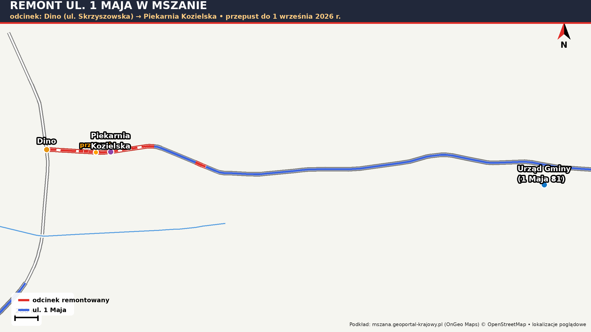

WażnePrzepust do 1 września, pełna mobilizacja na odcinku Dino – Piekarnia Kozielski i wyjaśnienie sprawy płyt ażurowych na skarpach — najważniejsze ustalenia w jednym miejscu. 🚜
Afera wodna w Połomi, spór o ulicę Ładną, inwestycje drogowe, CPK, kanalizacja, Młodzieżowa Rada Gminy, Karta Seniora i więcej — pełna relacja z wolnych wniosków ze znacznikami czasu nagrania (13:32 – 92:35) i wszystkimi źródłami. 🎥
66 401,80 zł na każde sołectwo w 2026! Czym jest fundusz sołecki, jak działa i dlaczego to „budżet obywatelski wsi”. Zebrania wiejskie już we wrześniu.
Pełny przebieg dyskusji radnych (nagranie 13:32–19:42 i 41:26–48:53) + UZUPEŁNIENIE: sprawdziliśmy w Dzienniku Ustaw, czy „nowe przepisy z 22 maja” to prawda.
W poprzednim poście opisywaliśmy dyskusję radnych o opóźnionym poinformowaniu mieszkańców o przekroczeniu norm w wodzie z kranu w Połomi. Wicewójt na sesji powołał się na "nowe, bardziej restrykcyjne przepisy z 22 maja 2026 r." – sprawdziliśmy to w oficjalnych źródłach i potwierdzamy, że to prawda, nie żadna wymówka:
🔑 Co się realnie zmieniło i tłumaczy sytuację ze starą szkołą w Połomi:
Podsumowując: argument wicewójta o nowych przepisach jako przyczynie wykrycia przekroczenia jest merytorycznie prawdziwy i potwierdzony w oficjalnym Dzienniku Ustaw – to nie była wymówka. Nie zmienia to jednak faktu, że sposób i szybkość poinformowania mieszkańców (dopiero po kilku dniach, częściowo przez sąsiednią gminę) pozostaje osobną kwestią, którą krytykowali radni na sesji, i to nadal jest zasadny temat do dyskusji.
Każdy temat ma swoją zakładkę. Możesz stworzyć własną kategorię. Głosujemy, dyskutujemy, a najlepsze pomysły trafiają do sołtysów i UG. Bez anonimowego hejtu - podpisujesz się imieniem i miejscowością.
Masz konkretny pomysł na rozwój Mszany, Połomi lub Gogołowej? Opisz go poniżej na Forum albo wyślij jako indywidualną propozycję bezpośrednio do Urzędu Gminy — takie zgłoszenia trafiają do właściwych komórek urzędu i są rozpatrywane, m.in. na komisjach Rady Gminy.
Widzisz usterkę — dziurę w drodze, nieświecącą latarnię, zepsuty znak, zapadniętą studzienkę? Zgłoś ją! Wyślij nam e-mail (przekażemy zgłoszenie do urzędu i właściwych służb) albo opublikuj je na Forum, żeby sąsiedzi mogli je poprzeć 👍.
Usterka naprawiona? Daj znać! Potwierdzenia napraw pokazują, że zgłoszenia mieszkańców działają — i motywują urząd oraz służby do dalszego reagowania. Opublikuj na Forum wpis ze zdjęciem „przed / po” albo wyślij potwierdzenie e-mailem.

Witaj w grupie, która powstała z myślą o informowaniu, integracji i wspieraniu mieszkańców Gminy Mszana! Naszym celem jest dostarczanie rzetelnych, sprawdzonych i aktualnych informacji dotyczących życia w naszej gminie.
Różne zdania i rzeczowa krytyka są mile widziane — grupa powstała także po to, by mieszkańcy mogli zgłaszać problemy i pomysły. Krytykujemy problemy i działania, a nie osoby — bez hejtu i obrażania kogoś po imieniu.
Forma ma być kulturalna i rzeczowa; w jednym wątku piszemy o jednej sprawie. W przypadku konkretnych liczb lub zarzutów prosimy o wskazanie źródła (bez fake newsów). Administratorzy reagują na formę i treść wypowiedzi, nie na sam fakt krytyki. Komentarze obraźliwe lub powtarzane w kółko mogą być usuwane, a w razie uporczywych naruszeń po upomnieniu — grozi wykluczenie.
Kontaktujemy się z Urzędem Gminy, Strażą Pożarną, Policją i innymi instytucjami, aby dostarczać wiarygodne informacje.
Jeśli chcesz być na bieżąco z tym, co dzieje się w Gminie Mszana, masz pytania, sugestie lub chcesz pomóc innym – zapraszamy! Razem możemy uczynić naszą gminę jeszcze lepszym miejscem do życia.
📩 Masz ważną informację? Prześlij ją do administratorów – zweryfikujemy i opublikujemy!
f Przejdź do grupySzanowni Państwo,
chcemy, aby grupa „Mszana – Przejrzysta Gmina & Sprawy Mieszkańców" była miejscem rzetelnym, kulturalnym i pomocnym dla wszystkich mieszkańców. Dlatego przedstawiamy zasady, które od dziś obowiązują wszystkich — także administrację.
Razem możemy uczynić naszą gminę jeszcze lepszym miejscem do życia. Dziękujemy za zrozumienie i współpracę.
Przekierowanie mieszkańców z poszczególnych okręgów gminy Mszana do oficjalnego kontaktu z radnymi oraz mapy okręgów wyborczych z 2024 roku:
Kupuj, sprzedawaj, pomagaj — tylko lokalnie. ☁️ online
Trening w rytmie hitów Sanah • fragment od 7:00 do 9:30
Zadbaj o formę i dobrą energię we własnym salonie! Zapraszamy do udziału w lekkim, tanecznym treningu cardio, który z łatwością wykonasz w domowym zaciszu. Połączymy proste kroki z ćwiczeniami wzmacniającymi w rytm najpopularniejszych utworów Sanah. Trening nie wymaga żadnego specjalistycznego sprzętu ani dużej przestrzeni – wystarczy odrobina miejsca, wygodny strój i zapas wody. Dołącz i rozruszaj się z nami!
🏛️